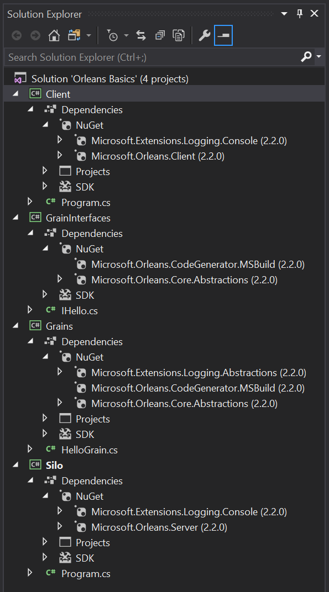
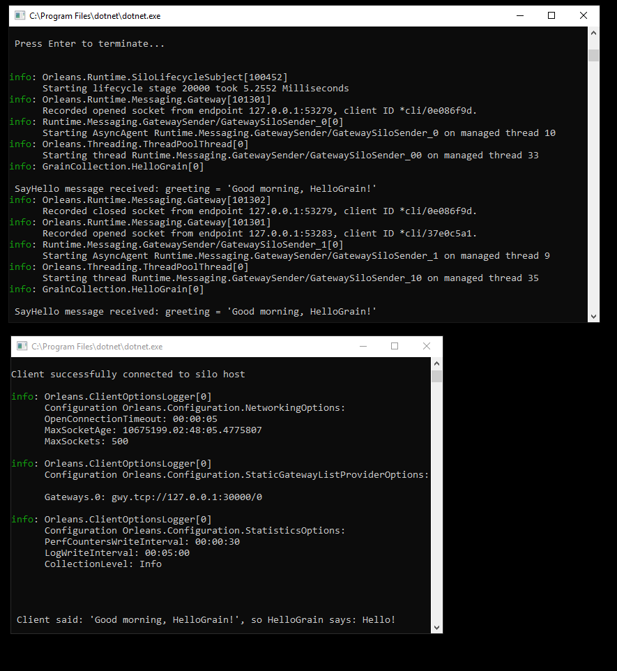

教程一-创建极简的Orleans应用程序
本教程提供有关创建基本运行的Orleans应用程序的逐步说明。它被设计为自包含且极简的，具有以下特征：
- 它仅依赖NuGet软件包
- 已使用Orleans 2.2.0在Visual Studio 2017中进行了测试
- 它不依赖外部存储
请记住，这只是一个教程，缺少适当的错误处理和其他对生产环境有用的东西。但是，它可以帮助读者真正了解Orleans的结构，并使他们将继续学习的重点放在与他们最相关的部分上。
项目搭建
在本教程中，我们将创建4个项目：
- 一个包含Grains接口的库
- 一个包含Grains类的库
- 一个控制台应用程序来托管我们的silos
- 一个控制台应用程序来托管我们的客户端
遵循本教程之后，完整的解决方案应如下所示：

在Visual Studio中创建这样的项目结构
注意：在这些项目的每个项目，您可以使用C#的默认项目类型。然后您在下面为每个项目提供的代码替换默认代码。您可能还需要添加using语句。
- 首先在新解决方案中创建一个控制台应用程序(.NET Core)项目。项目命名为
Silo并命名解决方案为Orleans Basics。 - 添加另一个控制台应用程序(.NET Core)项目并将其命名
Client。 - 添加一个类库(.NET Standard)并命名
GrainInterfaces。 - 添加另一个类库(.NET Standard)并命名
Grains。
删除默认源文件
- 删除Grains中的Class1.cs
- 删除GrainInterfaces的Class1.cs
添加项目引用
Grains引用GrainInterfaces。Silo引用GrainInterfaces和Grains。Clinet引用GrainInterfaces。
添加Orleans相关的NuGet包
- 在
Silo项目中，添加Microsoft.Orleans.ServerNuGet包。 - 在客户端项目中，添加
Microsoft.Orleans.ClientNuGet包。 - 在
GrainInterfaces和Grains项目中，添加Microsoft.Orleans.Core.Abstractions和Microsoft.Orleans.CodeGenerator.MSBuild包。 - 在
Grains项目中，添加Microsoft.Extensions.Logging.Abstractions用于记录日志的包。 - 在
Client和Silo项目中，添加Microsoft.Extensions.Logging.Console，以便他们可以在控制台窗口中打印日志。
Microsoft.Orleans.Server和Microsoft.Orleans.Client是元软件包，它们带来了在silos和客户端最可能需要的依赖关系。
Microsoft.Orleans.Core.Abstractions在任何地方都需要。两者都包含Microsoft.Orleans.Server和Microsoft.Orleans.Client。
Microsoft.Orleans.CodeGenerator.MSBuild自动生成调用Grains通过机器边界所需的代码。所以两者都需要GrainInterfaces和Grains项目。
定义grains接口
在GrainInterfaces项目中，添加一个IHello.cs代码文件，并在其中定义以下IHello接口：
using System.Threading.Tasks;
namespace OrleansBasics
{
public interface IHello : Orleans.IGrainWithIntegerKey
{
Task<string> SayHello(string greeting);
}
}
定义一个Grains类
在Grains项目中，添加一个HelloGrain.cs代码文件，并在其中定义以下类：
using Microsoft.Extensions.Logging;
using System.Threading.Tasks;
namespace OrleansBasics
{
public class HelloGrain : Orleans.Grain, IHello
{
private readonly ILogger logger;
public HelloGrain(ILogger<HelloGrain> logger)
{
this.logger = logger;
}
Task<string> IHello.SayHello(string greeting)
{
logger.LogInformation($"\n SayHello message received: greeting = '{greeting}'");
return Task.FromResult($"\n Client said: '{greeting}', so HelloGrain says: Hello!");
}
}
}
创建silos– Program.cs
在这一步，我们添加代码用于初始化一个服务-silos，这个服务将托管和运行我们的Grains。我们将在此处使用开发群集提供程序，以便我们可以在本地运行所有内容，而无需依赖外部存储系统。您可以在本地开发配置Orleans文档的页面。我们将在其中运行带有单个silos的集群。
将以下代码添加到Silo项目的Program.cs中：
using System;
using System.Threading.Tasks;
using Microsoft.Extensions.Logging;
using Orleans;
using Orleans.Configuration;
using Orleans.Hosting;
namespace OrleansBasics
{
public class Program
{
public static int Main(string[] args)
{
return RunMainAsync().Result;
}
private static async Task<int> RunMainAsync()
{
try
{
var host = await StartSilo();
Console.WriteLine("\n\n Press Enter to terminate...\n\n");
Console.ReadLine();
await host.StopAsync();
return 0;
}
catch (Exception ex)
{
Console.WriteLine(ex);
return 1;
}
}
private static async Task<ISiloHost> StartSilo()
{
// define the cluster configuration
var builder = new SiloHostBuilder()
.UseLocalhostClustering()
.Configure<ClusterOptions>(options =>
{
options.ClusterId = "dev";
options.ServiceId = "OrleansBasics";
})
.ConfigureApplicationParts(parts => parts.AddApplicationPart(typeof(HelloGrain).Assembly).WithReferences())
.ConfigureLogging(logging => logging.AddConsole());
var host = builder.Build();
await host.StartAsync();
return host;
}
}
}
创建客户端– Program.cs
最后，我们需要配置一个客户端与我们的Grains进行通信，将其连接到集群(其中只有单个silos)，然后调用Grains。请注意，群集配置必须与我们用于silos的配置匹配。有关客户端的更多信息，请参见集群和客户端Orleans文档中的部分。
using Microsoft.Extensions.Logging;
using Orleans;
using Orleans.Configuration;
using System;
using System.Threading.Tasks;
namespace OrleansBasics
{
public class Program
{
static int Main(string[] args)
{
return RunMainAsync().Result;
}
private static async Task<int> RunMainAsync()
{
try
{
using (var client = await ConnectClient())
{
await DoClientWork(client);
Console.ReadKey();
}
return 0;
}
catch (Exception e)
{
Console.WriteLine($"\nException while trying to run client: {e.Message}");
Console.WriteLine("Make sure the silo the client is trying to connect to is running.");
Console.WriteLine("\nPress any key to exit.");
Console.ReadKey();
return 1;
}
}
private static async Task<IClusterClient> ConnectClient()
{
IClusterClient client;
client = new ClientBuilder()
.UseLocalhostClustering()
.Configure<ClusterOptions>(options =>
{
options.ClusterId = "dev";
options.ServiceId = "OrleansBasics";
})
.ConfigureLogging(logging => logging.AddConsole())
.Build();
await client.Connect();
Console.WriteLine("Client successfully connected to silo host \n");
return client;
}
private static async Task DoClientWork(IClusterClient client)
{
// example of calling grains from the initialized client
var friend = client.GetGrain<IHello>(0);
var response = await friend.SayHello("Good morning, HelloGrain!");
Console.WriteLine("\n\n{0}\n\n", response);
}
}
}
运行应用程序
构建解决方案并运行Silo项目，在收到确认信息后，表示正在运行Silo(“按Enter键以终止...”)，然后运行Client项目。成功看起来像这样：
